POS kitchen Screen shows orders and their state to Cook and Manager
Note: This module is tested and working in Odoo
community edition but not tested in Enterprise version. And we are supporting Ubuntu OS and not
Windows OS.
Module is not compatible with "pos_hr".
Features
- The kitchen screen is for staff to see orders that have been placed.
- It will also display specific table orders.
- There are three user categories on the kitchen screen: cook, waiter, and manager.
- Cook can only see and change the order of certain categories.
- All category and table orders are visible to the manager.
- Manager and cook users have the ability to print receipts (via Posbox Thermal Print).
- Managers have the ability to change states based on orders and products.
- The waiter has no payment rights and can only send orders to the kitchen.
- Order sync screen, which displays all send to the kitchen (draft) orders with cancel options and
paid.
- Control Order Types from the POS.
- There will be no more sessions for the user role cook.
- Order type delivery user role.
How to use
From the POS configuration, select restaurant mode.
Fast-Food/Quick Service Restaurant (QSR):
Full-Service Restaurant (FCS): Send to kitchen button will
be visible to send the order to the kitchen screen and the order will also get sent to the kitchen
screen after payment.
Default Order Types configuration.
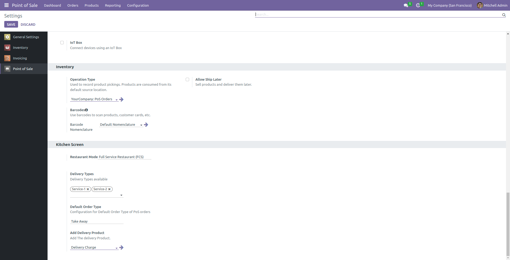
User's role configurations.
Manager: No need for a pos.config for the Manager.
They have access to the kitchen, Delivery order view, Order sync screen, etc.
Can be removed a product/item which is in the Preparing
state of the kitchen.
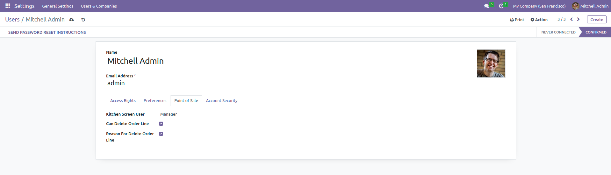
Waiter: Can send an order to the kitchen, no rights for the
payment, kitchen screen, delivery order screen, and order sync screen.
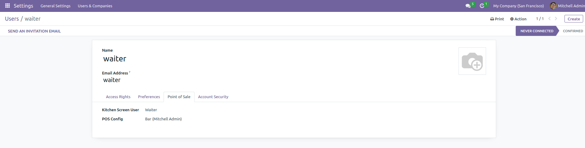
Cook: Having rights to the kitchen screen, only assign
categories of the product display in their kitchen screen.
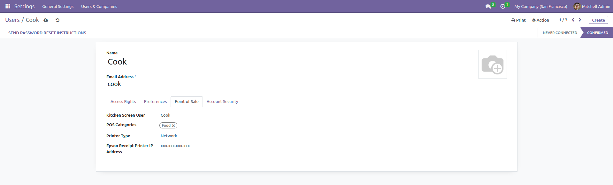
Delivery Person: Having rights the access delivery types
orders which assign to him.
Can have a right of the payment after Delivered order and if
an order has not been paid yet.
The group must be selected for the Delivery Person.
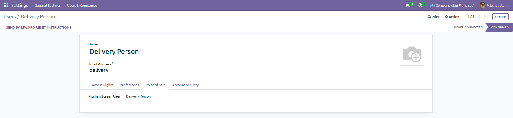
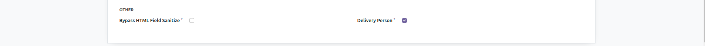
Send to kitchen button can be used for table service.
For counter service simply place an order and it will be
sent to the kitchen.
If a user is a manager, the "Chef Hat" icon will visible.
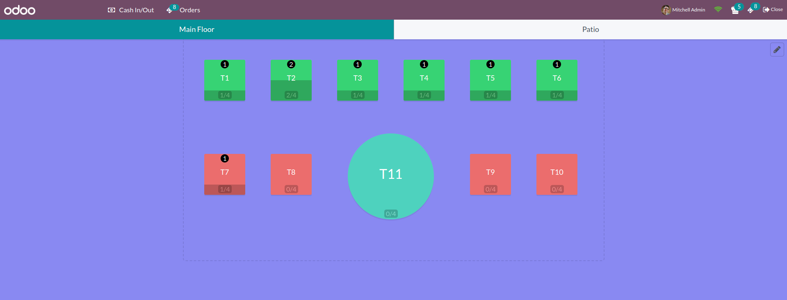
The manager can see the screen that is shown below by
clicking the "Chef Hat" icon.
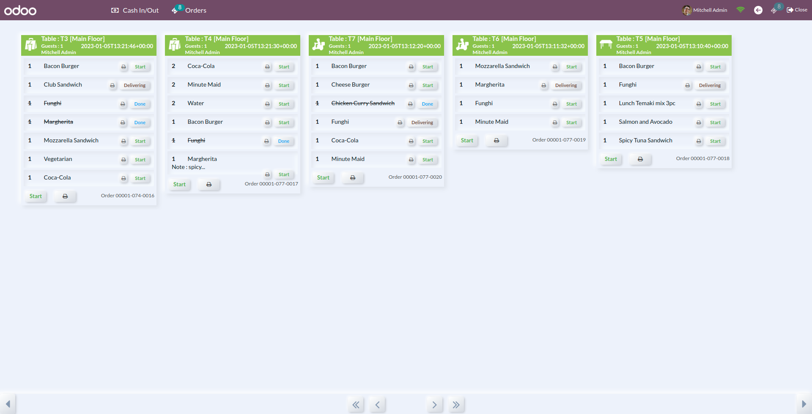
Order sync screen for sync orders sends to the kitchen by
cashier or waiter and only available for cashier.
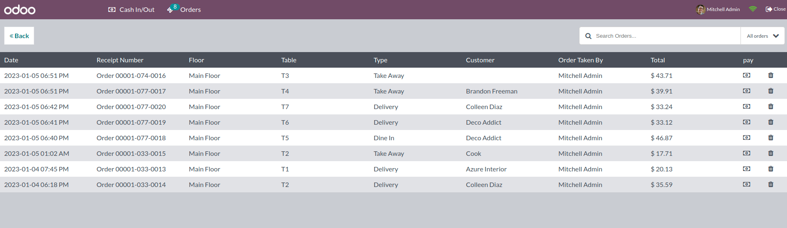
After login cook will see their kitchen screen.
As per the order progress, a cook can update the state.
No more pos access for the cook.
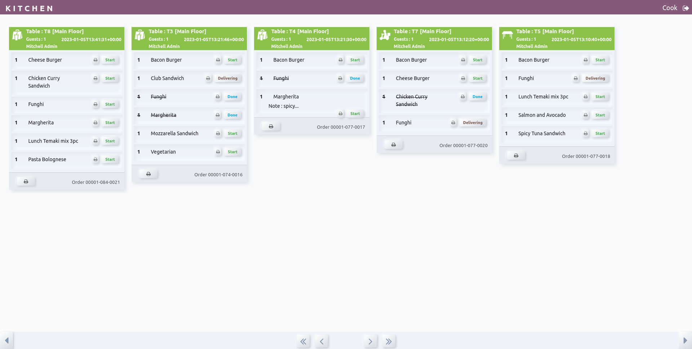
The delivery screen is visible for the delivery user after
login.
Visible assigned orders.
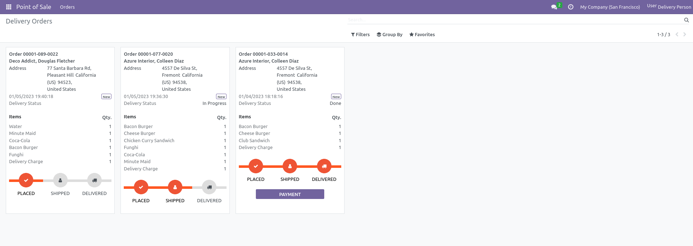
Delivery type configuration.
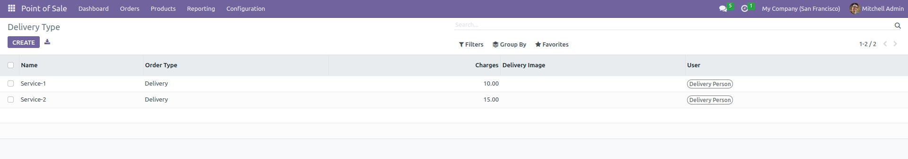
POS screen.
For the select order types.
Send an Order to the kitchen.
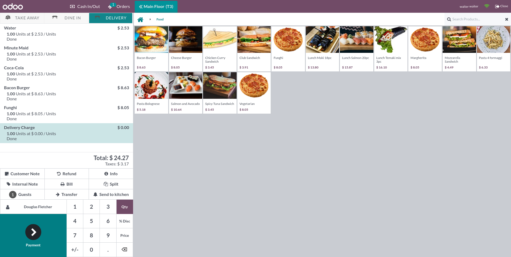
Delivery services and charges.
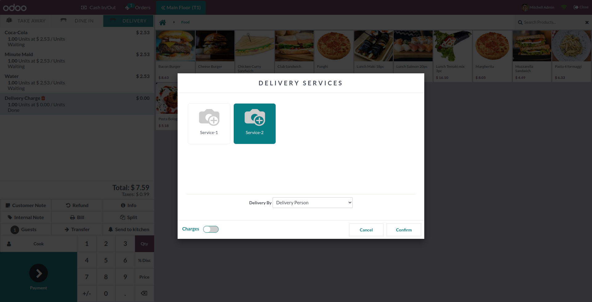
Order type and Delivery details on the receipt.
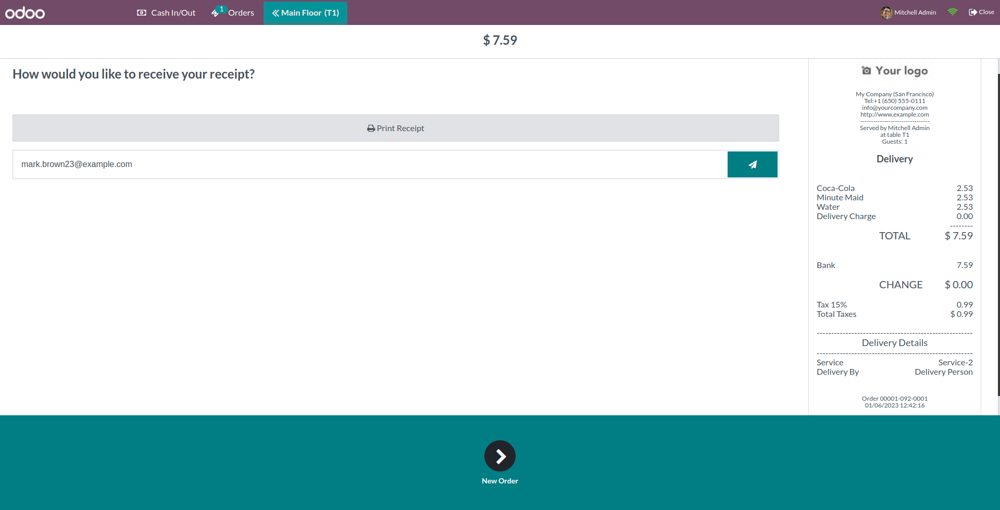
Delivery details in POS order[Backend].
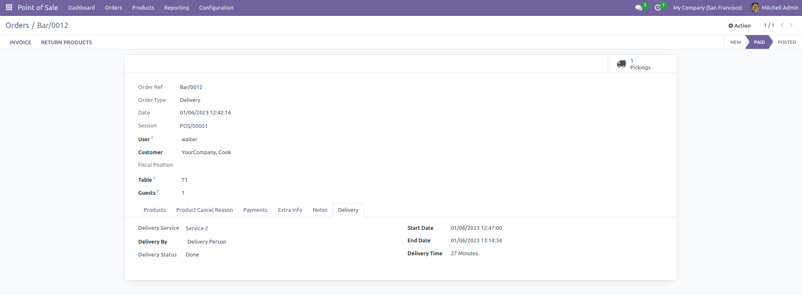
Create Remove Product Reason for the add reason, to set that
on remove product.
Remove items will be stored on order.
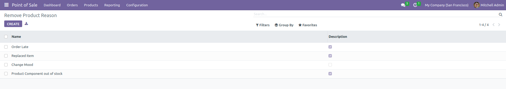
Remove Product Reason from POS.
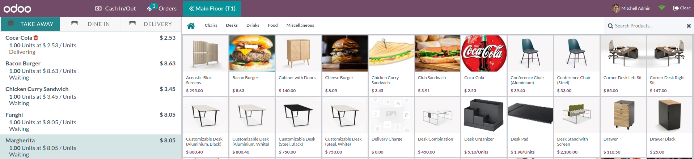
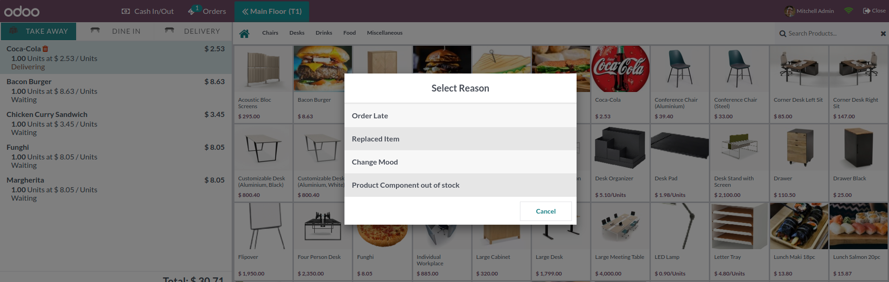
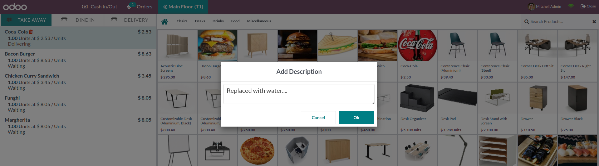
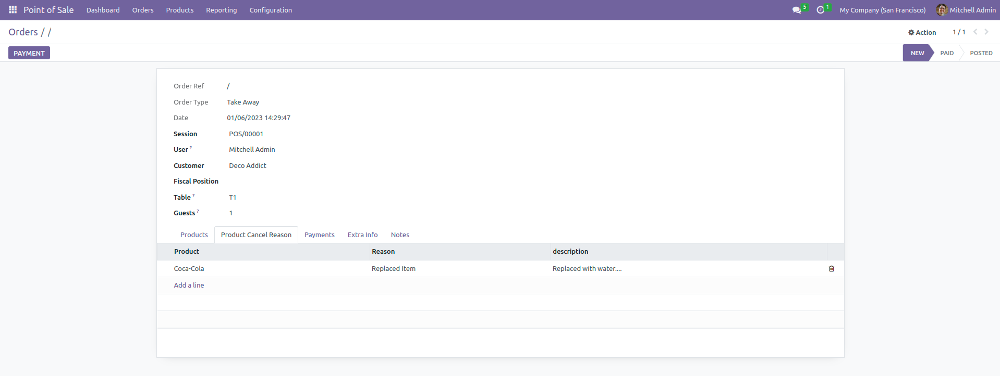
Release Notes
Release Update - Jan 18, 2023 Version - 16.0.1.0.1
Bug Fixes
Send to kitchen without table.
Switching Kitchen Screen and Order Sync.
Delivery Order display on done order by the cook.
Remove POS Order from POS after Payment from backend as well.
Release Update - Jan 06, 2023 Version - 16.0.1.0.0
Initial Release
NOTE:
We give 60 days support for our customers. Before trying in your live db, please ask us to provide
you for test link. If any other custom modules are installed and because of that some errors occurs
then we charge extra.